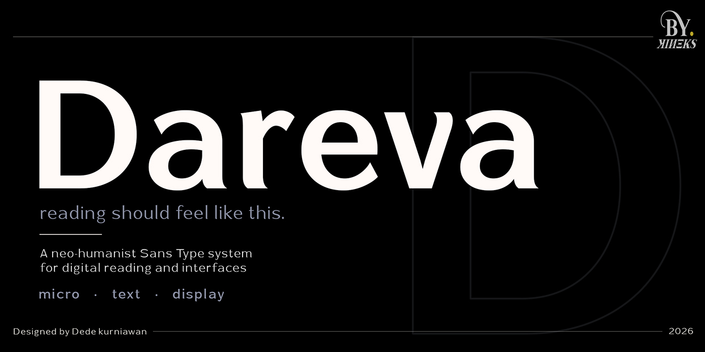
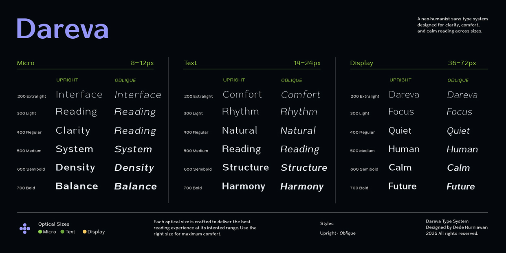
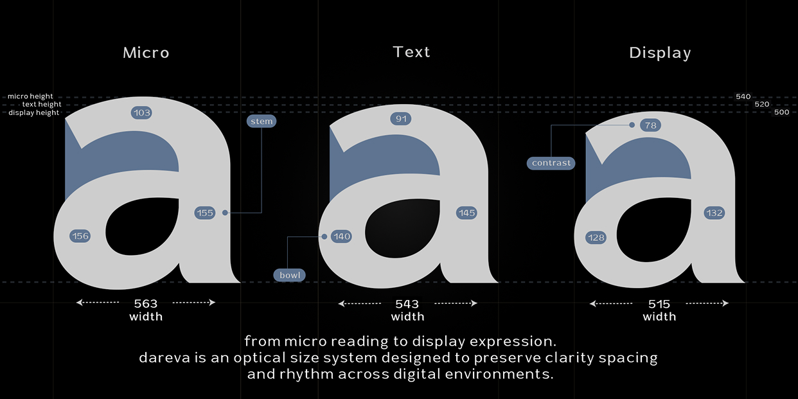
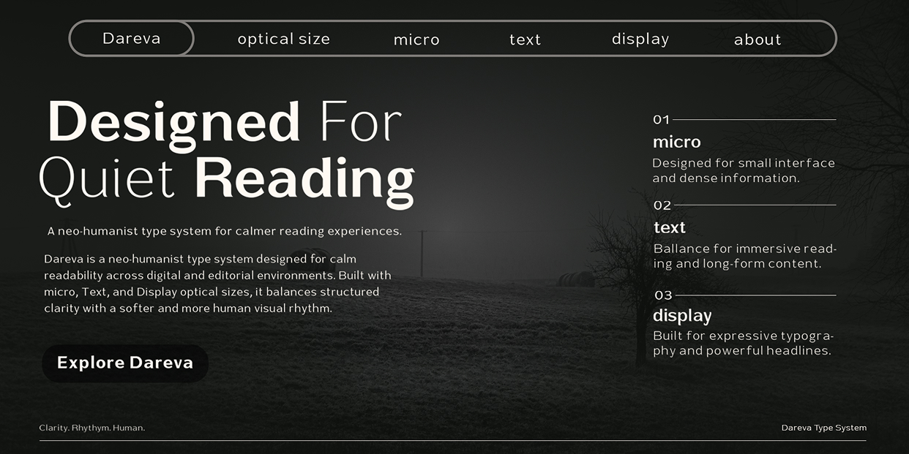

Designing Dareva: Why One Typeface Wasn’t Enough

Modern typography no longer lives on paper alone.
Today, we read on phones, dashboards, smartwatches, desktop applications, e-books, financial reports, and countless digital interfaces. The same typeface may appear at 8 pixels inside a notification, 16 pixels in an article, and 72 pixels on a landing page.
Yet many typefaces simply scale the same outlines up and down.
Technically, this works.
Visually, it doesn’t.
That realization became the starting point behind Dareva.
Instead of designing a single font for every situation, I designed a complete optical size system where every size is optimized for its own reading environment.
Reading Changes with Size

Typography is not static.
When text becomes smaller, details begin to disappear.
Counters become crowded.
Letter spacing collapses.
Thin strokes lose definition.
Reading becomes work instead of comfort.
On the other hand, enlarging those same shapes introduces another problem. Large headlines expose every curve, every transition, every imbalance that would otherwise remain invisible.
A single design simply cannot excel at every size.
That is exactly why optical sizes exist.
What Is Optical Size?
Optical size is the practice of redesigning a typeface for different reading sizes instead of merely scaling it.
Historically, metal type foundries produced separate cuts for captions, text, subheadings, and display typography.
Although digital fonts made infinite scaling possible, human vision never changed.
A font optimized for tiny UI labels still requires different proportions than one designed for 72-pixel headlines.
Dareva brings that philosophy into modern digital typography.

The Three Systems of Dareva
Rather than one universal design, Dareva consists of three independent optical sizes.
8–12 px
Built for the smallest reading environments. It prioritizes larger apertures, wider spacing, stronger stems, taller x-height, and simplified details.
Micro chooses clarity first.
14–24 px
The balance point of the family, developed for articles, documentation, UI copy, editorial layouts, and long-form reading.
Text focuses on rhythm.
36–72 px
Designed for impact, introducing finer stroke contrast, tighter proportions, more expressive curves, and refined terminals.
Display maximizes elegance for headlines and branding.
Designing Beyond Scaling
One of the biggest misconceptions about typography is that larger text simply needs to be scaled.
In reality, every optical size in Dareva was redesigned.
- Characters become progressively narrower.
- Stroke contrast changes.
- Spacing evolves.
- Letter rhythm adapts.
- Bowl proportions, stem thickness, and internal counters were reconsidered for each optical size.
These changes may appear small individually. Together, they fundamentally change how text feels to read.
Typography Should Disappear
The best typography rarely attracts attention.
Instead, it disappears.
Readers remember the article.
Users complete their tasks.
Interfaces feel effortless.
That became the design philosophy behind Dareva.
Reading should never feel mechanical.
It should feel calm.
Designed for Digital Products
Throughout development, Dareva was tested in a wide range of real-world scenarios:
- Financial dashboards
- Mobile applications
- Editorial spreads
- UI systems
- Product packaging
- Game interfaces
- Web design
- Multilingual typography

Each environment presents different reading challenges.
Instead of forcing one solution to fit every situation, Dareva adapts through its optical size system.
More Than a Font Family
Dareva is not simply a collection of 36 font styles.
It is a reading system.
Every optical size was independently crafted to preserve clarity, rhythm, and visual comfort across modern digital environments.
Whether someone reads eight-pixel interface labels or seventy-two-pixel headlines, the goal remains the same:
to make typography disappear, allowing ideas to become the focus.
Final Thought
Designing Dareva taught me that typography is less about drawing beautiful letters and more about respecting the reader.
Every adjustment whether widening a counter by a few units or reducing stroke contrast serves a single purpose:
Helping people read with less effort.
Because good typography doesn’t ask for attention.
It quietly earns it.